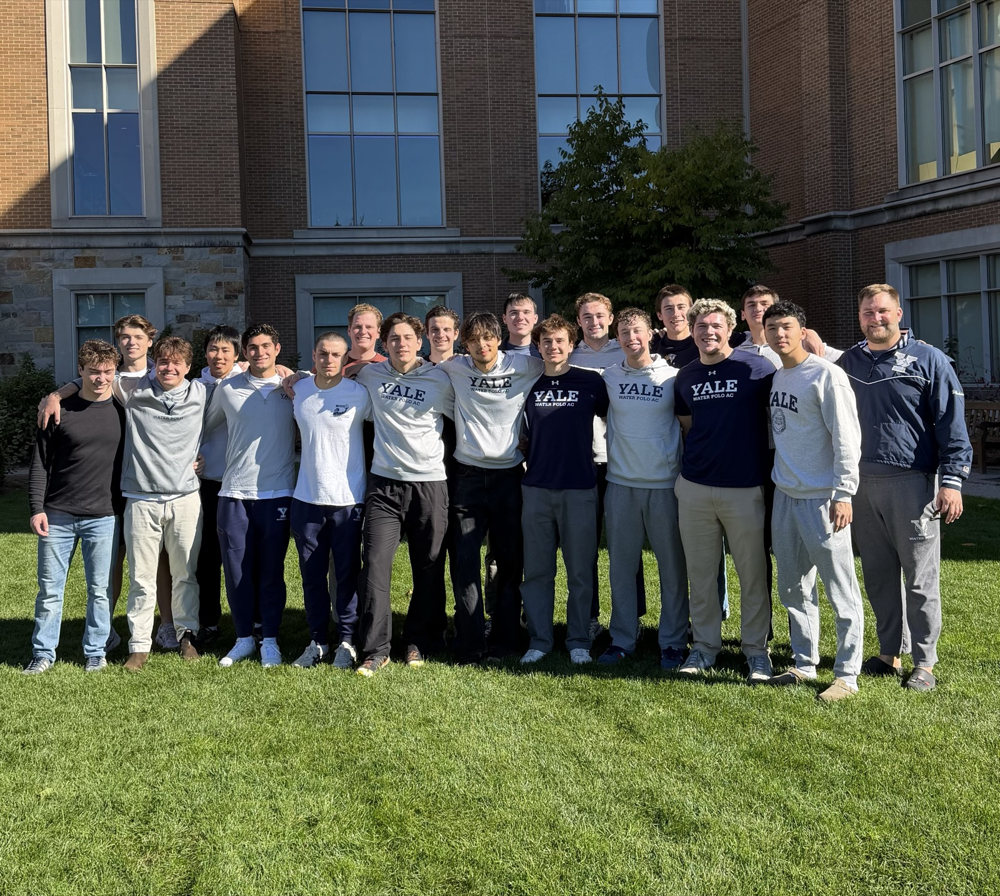
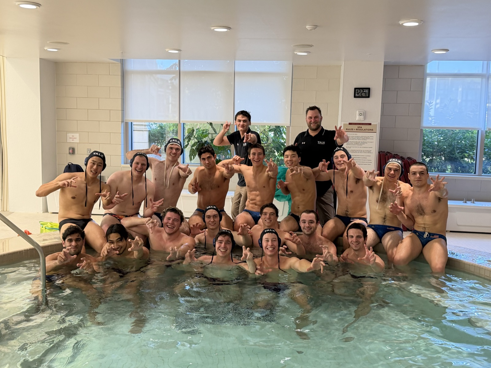
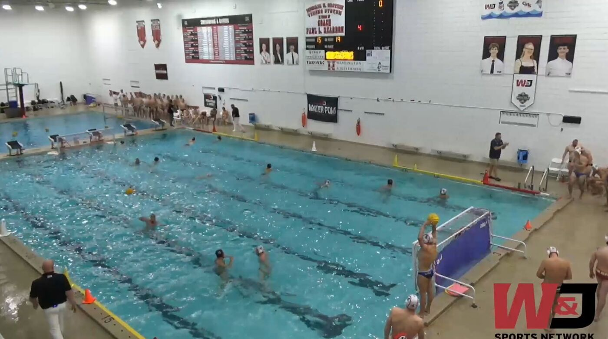
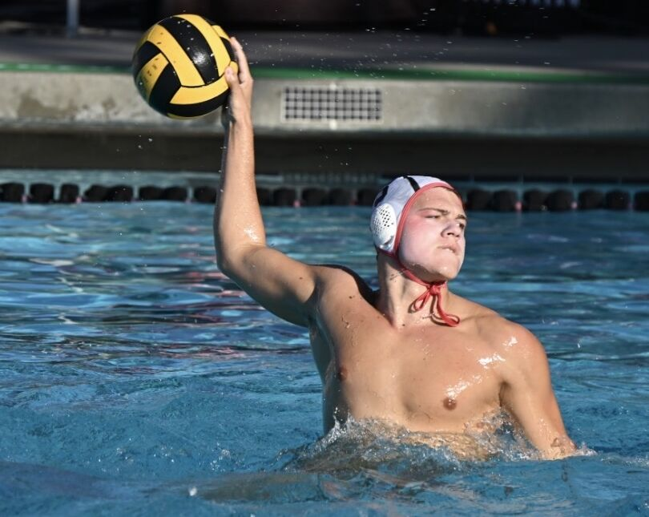
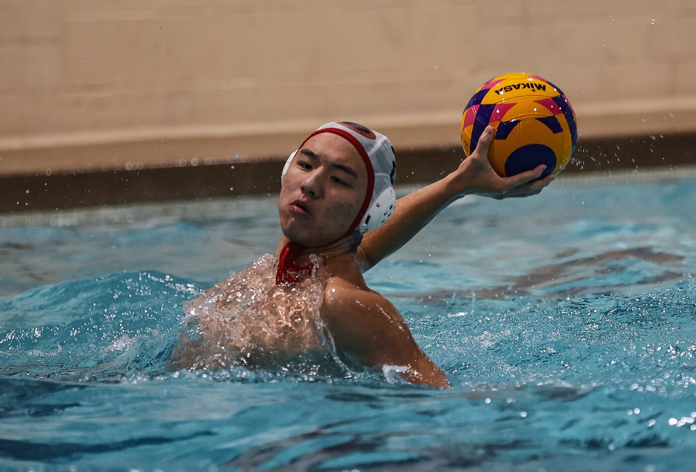
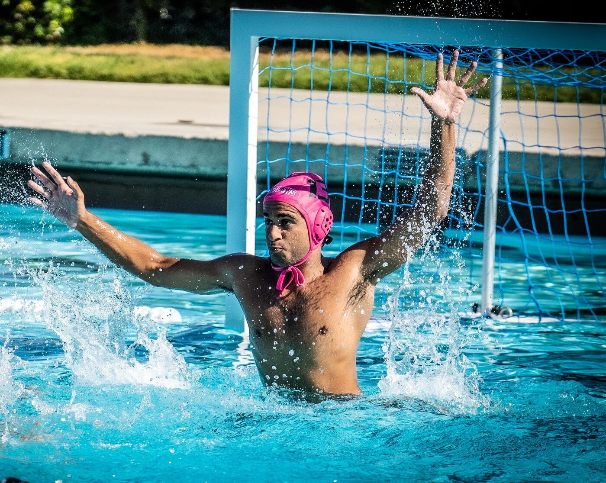

Team updates
News
Tournament recaps and recruit announcements from the Yale Men's Water Polo Club.
Announcements


Yale came into the tournament as the top seed after a regular season with just one loss. On day one they beat Boston College 11-7, led by Captain Antonio Giraldez Greco (‘29) with six goals, and then Northeastern 14-8, behind six goals from freshman Ryan Karr and three each from Teddy Meeks (‘28) and Antonio. In the final against Dartmouth, Yale gave up the opening goal but never trailed again, leading 2-1, 5-3 and 9-4 at the quarter breaks before closing out a 10-8 win, with Antonio scoring five and Ryan adding four.
Huge shoutouts go to Captain and goalie Garrett Curtis (‘28), whose crucial saves kept Yale in control all weekend, and to student coach Tomas Watson (‘27), for his leadership all season and his outstanding defense in the championship tournament.
The win sends Yale to the Club Water Polo National Tournament in Huntsville, Alabama, for the program’s first trip to nationals since 2011, where the 8th-seeded Bulldogs are expected to face 9th-seeded Virginia in the first round on Friday, Nov 6. Go Bulldogs!

The Yale University Bulldogs men's water polo team opened the 2026 fall competition season with its annual trip to the Washington & Jefferson University Invitational.
Yale played three games over the weekend — two on Saturday against Pittsburgh Masters and W&J, followed by a Sunday morning matchup with Michigan State.
Game 1 — Yale 13, Pittsburgh Masters 17
In the opener, the Elis went toe-to-toe with the older Masters players right from the swim-off, ending the first quarter tied 2-2. The back-and-forth continued in the second quarter, with each team scoring five times to enter the extended break tied 7-7.
The third quarter proved to be Yale's undoing. Pittsburgh scored five times while Yale managed just once, creating a 12-8 deficit entering the final frame. Both teams scored five times in the fourth, with Pittsburgh taking the opener 17-13.
Yale's two rookie field players accounted for more than half of the Bulldogs' goals. Californian Ryan Karr fired home five goals, while Lawrenceville's Andrew Yang added two. Senior Tomas Watson opened his final season with a hat trick, while sophomore Antonio Greco scored twice. Junior Teddy Meeks added the other marker.
Local sophomore Garrett Curtis shared the goaltending duties with rookie Californian Roshan Khanna. Curtis registered four saves and three steals, while Khanna made three saves and stole two passes. The pair shared the cage throughout the weekend.
Game 2 — Yale 19, Washington & Jefferson College 15 🏆
The second game Saturday was against the host Washington & Jefferson Presidents — a Division III program the Bulldogs had beaten once since becoming a club sport, ending a drought of nearly two decades.
With one game under their belts, the Elis came out with a coordinated attack and jumped to an early 2-0 lead. The Presidents tied things up before Yale scored twice more to finish the opening quarter ahead 4-2.
The teams traded goals throughout the second period, leaving the Bulldogs with a 9-7 halftime advantage. Yale's strong first half appeared to rattle the W&J players, and the Elis took advantage, roaring out to a six-goal lead before settling for a 15-11 advantage heading into the final quarter.
The teams again traded goals, and Yale came away with a 19-15 victory — a historic win over the Presidents, the first since the 2008 season.
Karr again led the way with five goals, matched by Watson. Greco added four, while Aaron Chasn and Yang each scored twice. Meeks added one.
Game 3 — Yale 10, Michigan State Spartans 12
Last up on the weekend trip was a Sunday morning date with Michigan State. Hausladen used the game to spread out playing time among his charges, providing valuable early-season experience and reps.
The teams battled to a 4-4 first-quarter draw and a 7-7 tie at halftime. The Spartans then gained a one-goal advantage, 10-9, heading into the fourth quarter.
Karr tied things up a minute and a half into the final frame, but the Elis' defense surrendered two late goals and Michigan State came away with a 12-10 victory.
Karr once again paced the attack with five goals. Greco and Watson each tallied twice, while Nico Christofferson added a single.
Next Up: Home Tournament Against New England Rivals
The Bulldogs will now begin preparations for their first league tournament, which will take place September 19–20 at Yale.

The Yale University Bulldogs men's water polo team is proud to announce the addition of Ryan Karr to the 2026–27 roster.
Karr started playing water polo at age nine for Stanford WPC. In high school at Sacred Heart Prep he also joined Atherton Aquatics Foundation. Freshman year, he led the Sacred Heart Prep JV team to a perfect 21–0 record while leading the team in scoring. Karr then went on to win 3x WBAL, 3x CCS Open, and 3x NorCal Div 1 championships while starting junior and senior year. Sacred Heart finished #2 overall in the nation his senior year and Karr was named to the All-League team.
"Ryan's water polo pedigree is excellent. He is a dynamic, powerful force who can shut down opponents in the defensive end. He brings a varied arsenal to the offensive side of the ball including a booming outside shot and the ability to drive hard to the net."
— George Gross, Jr. · Director of Recruiting, Yale Men's Water PoloOutside of the water and classroom, Karr has had a significant impact on his community. He worked as a lifeguard for three years, organized Latin and water polo camps and volunteered as a swim coach for a local swim team devoted to serving under-resourced youth. Between junior and senior year, he helped excavate an old Roman fort in Portugal. Karr won a gold medal at the 2024 National Latin Exam and was a USAWP Outstanding Academic All-American for his final three years at Sacred Heart.
"I'm excited to officially join the water polo team at Yale this fall. From the moment I got on campus, I could tell it was a place where I'd be pushed to grow both in the pool and in the classroom. I'm looking forward to competing alongside an incredible group of teammates, taking advantage of everything Yale has to offer, and making the most of the next four years."
— Ryan Karr
The Yale University Bulldogs men's water polo team is proud to announce the addition of Andrew Yang to the 2026–27 roster.
Yang started playing water polo in 9th grade at The Lawrenceville School in New Jersey. In his sophomore year, he started playing club with CT Premier Water Polo. At Lawrenceville, he was named the Varsity Water Polo Captain and led the team to state championships for four consecutive years, along with winning the 2024 Beast of the East tournament.
"Andrew brings a high level of play in all aspects of the game. He has a powerful, quick release shot from distance that is highly accurate. Proper defensive positioning is also a hallmark of his play."
— George Gross, Jr. · Director of Recruiting, Yale Men's Water PoloOutside the pool, Yang founded and led the Lawrenceville Learn to Swim program, teaching 135+ students essential swimming and water safety skills, raising $15,500+ in external funding, overseeing the certification of almost 30 Red Cross WSI Instructors, and establishing a partnership with Homefront to expand access to 50+ underserved youth in the Trenton community. He also led a research project, directing an original 500-person survey to investigate the relationship between socioeconomic factors and swimming proficiency among young adults.
"I chose Yale because I wanted to join a community that is passionate about learning and leadership. I can't wait to take risks, pursue new interests, and lead new ventures."
— Andrew Yang
The Yale University Bulldogs men's water polo team is proud to announce the addition of goalkeeper Roshan Khanna to the 2026–27 roster.
Khanna started playing water polo in 2019 with Outlaws Water Polo before joining San Jose Express from 2021–2025, where he served as team captain his junior year. At Valley Christian High School, he was a three-time team captain, including as varsity captain his senior year. He was named Freshman MVP and led his team to a CCS Sectionals title his junior year.
"Having a second experienced goalie like Roshan is a game changer for team practices and tournament play. Now all our players will get more reps in practice shooting at a quality goalie and scrimmages will operate at a higher level having good goalies in both nets."
— Doug Hausladen · Head Coach, Yale Men's Water PoloOutside the pool, Khanna served as his school's Associate Student Body Treasurer his junior and senior years and earned multiple state and district finalist honors in DECA across all four years of high school. He won his school's prestigious venture capital pitch competition, served as the school mascot, and is a three-time recipient of the Quest Award for outstanding performance in the social sciences. He spent four years lifeguarding, rising to Director of Lifeguarding at his local pool.
"I chose Yale for its emphasis on a liberal arts education and a tight-knit community. I'm excited to immerse myself in Yale's culture of entrepreneurial excellence since I plan to pursue a career in venture capital. I can't wait to compete with the Bulldogs water polo team at the next level and surround myself with intellectually curious people who are driven to become well-rounded members of society."
— Roshan Khanna